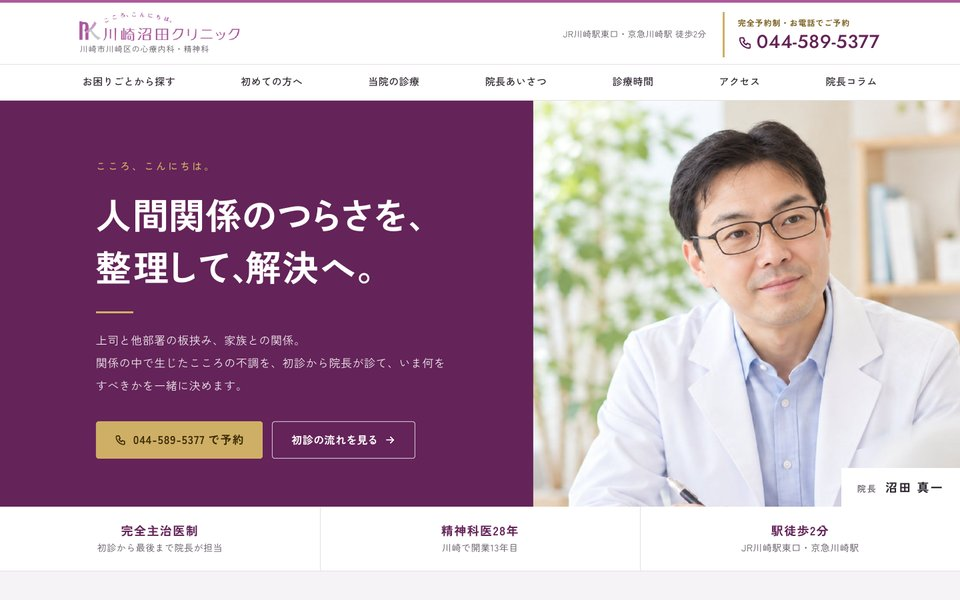
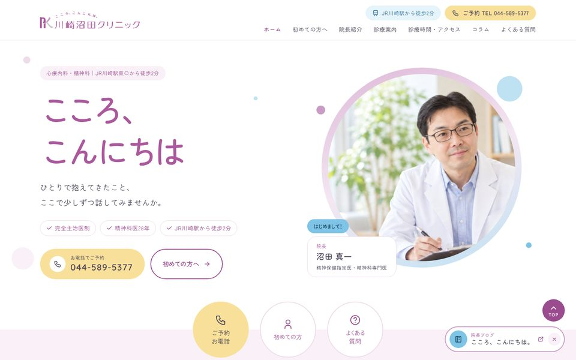
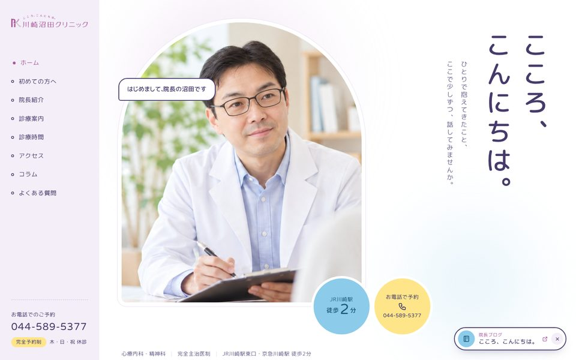

DESIGN PROPOSAL
川崎沼田クリニック TOPページ デザイン案
PC・スマホのどちらでもご覧いただけます。カードを押すと、それぞれの案が開きます。
-

DESIGN 006（ご意見を反映した修正案）
困りごとの解決を先に伝える案
今のサイトに近い色の配分（ロゴの紫・濃い紫・金）と角ゴシックで、落ち着いた印象に。お困りごとから探せる入口を、ファーストビューのすぐ下に置きました。
006を見る → -

DESIGN 001
丸い院長写真とやさしい紫
左にキャッチ、右に丸く抜いた院長写真。ロゴの紫を軸に、丸ゴシックでやわらかくまとめた案です。
001を見る → -

DESIGN 004
「会話」をテーマにした案
アーチ形の窓に院長写真、縦書きのキャッチ。ふきだしやチャット風の見せ方で、話しかけるようなページにした案です。
004を見る →
※確認用のデザイン案です。院長写真はサンプル画像です。© MD Design